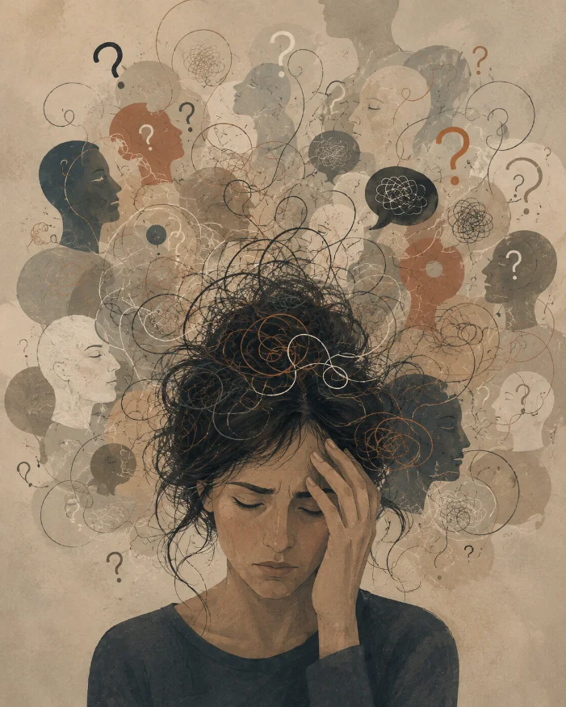

Geštalt psihoterapija · uživo i onlajn
Ne morate znati kako se to zove ni odakle je došlo. Dovoljno je da dođete i kažete kako se osećate danas — odatle počinjemo.
01
Kroz formu na dnu strane ili na e-mail. Dve rečenice o tome šta vas dovodi su dovoljne.
02
Odgovaram lično u roku od 48 sati i predlažem slobodne termine — uživo ili onlajn.
03
60 minuta bez pripreme. Ne morate da znate unapred šta ćete da mi kažete. Počećemo od toga kako se osećate ovde i sada. Ako procenim da vam ne mogu pomoći, uputiću vas kolegi.
Geštalt je reč nemačkog porekla koja označava ideju da je celina više od prostog zbira svojih delova. U geštalt terapiji čovek se posmatra kao celina u kojoj su misli, emocije, telo i ponašanje međusobno povezani i ne mogu se u potpunosti razumeti ako se posmatraju odvojeno.
Jedan od osnovnih principa geštalt terapije jeste razvijanje svesnosti. Kroz nju postajemo sposobni da jasnije prepoznamo svoje autentične potrebe, osećanja i načine reagovanja, kao i obrasce ponašanja koji nam više ne služe. Kada ih osvestimo, otvara se prostor za slobodniji izbor i razvijanje autentičnijih načina bivanja.
Geštalt terapija stavlja poseban fokus na iskustvo „ovde i sada“. To znači da pažnju usmeravamo na ono što se događa u ovom trenutku — u našem telu, emocijama, mislima i odnosu sa drugima.
To ne znači da prošlost nije važna. Naprotiv, njome se bavimo kroz ono što je i dalje prisutno i živo u našem sadašnjem iskustvu. Na taj način učimo da razumemo ono što nas i dalje opterećuje, kako bismo to postepeno otpustili i živeli slobodnije u sadašnjosti.

Anksioznost, iscrpljenost od stalnog prilagođavanja, raskid, gubitak i teškoće u odnosima. Redovan nedeljni ritam, uživo ili onlajn.
Prostor koji je samo vaš, uz jasan dogovor o poverljivosti sa roditeljima. Ako mlada osoba ne želi terapiju, počinjemo od roditelja.
Zatvorena grupa do osam ljudi i radionice na temu granica, ljutnje i odnosa. Novi ciklus otvara se dva puta godišnje.
| Format | Trajanje | Gde | Cena |
|---|---|---|---|
| Individualna terapija | 60 min | Uživo ili onlajn | 3.000 RSD |
| Uvodni razgovor | 60 min | Uživo ili onlajn | 2.000 RSD |
| Grupna terapija | 90 min | Uživo | 1.500 RSD |
| Radionica | po programu | Uživo | po programu |
Termin otkazan manje od 24 sata pre zakazanog vremena se naplaćuje. Za studente i one kojima je cena prepreka imam nekoliko termina po nižoj ceni — pitajte, dogovorićemo se.
„Mogla sam da budem ljuta i to nije pokvarilo ništa. To mi se do tada nije desilo.”
„Došao sam zbog nesanice. Ispostavilo se da je bilo reči o poslu koji nisam smeo da napustim.”
„Moja ćerka je prvo ćutala pola sata. Danas mi sama kaže kada joj je teško.”
Objavljeno uz pismenu saglasnost, bez podataka koji bi mogli identifikovati klijente.
Odrasla sam kao osoba na koju se može računati — vredna, snalažljiva, uvek pozitivna. Trebalo mi je dugo da vidim da to nije bila snaga nego oklop — način da me niko ne vidi previše blizu. Na psihoterapiji sam se prvi put osetila dovoljno bezbedno da skinem taj oklop i da otkrijem sama sebi šta je ispod njega. Zato danas sedim sa druge strane te sobe — znam koliko strašno i koliko oslobađajuće to ume da bude.
ObrazovanjeDiplomirani psiholog — Filozofski fakultet, Univerzitet u Novom Sadu, 2013.
EdukacijaGeštalt psihoterapija — Institut za geštalt studije „Sinergija”, Beograd, četvorogodišnja edukacija
SupervizijaMr Vesna Rakočević, geštalt supervizorka
Zavisi od toga šta vas dovodi. Neki dođu na desetak seansi zbog konkretne situacije, drugi ostanu godinama. O trajanju odlučujete vi i o tome otvoreno govorimo.
Individualna seansa traje 60 minuta, u istom danu i satu svake nedelje. Grupni rad traje 90 minuta.
Da. Jedini izuzeci su zakonom propisane situacije neposredne opasnosti za život, i o njima vas obaveštavam na prvoj seansi.
Da, uz jedan uslov: da imate prostor u kojem vas niko ne čuje i pola sata mira posle. Radim preko zaštićene video veze.
Ne — nisam lekar. Ako procenim da bi vam psihijatrijska procena pomogla, uputiću vas kolegi sa kojim sarađujem.
Slobodno recite. Terapeut nije za svakoga i to nije neuspeh — pomoći ću vam da nađete nekoga kod koga ćete se osećati sigurnije.
Odgovaram lično, obično u roku od 48 sati. Ako mi je raspored pun, reći ću vam iskreno i predložiti kada da se ponovo javite.
Kabinet
Gospodar Jevremova 41, drugi sprat, Beograd
E-mail
nikolina@djurovic-terapija.rs
Telefon
+381 64 123 7890